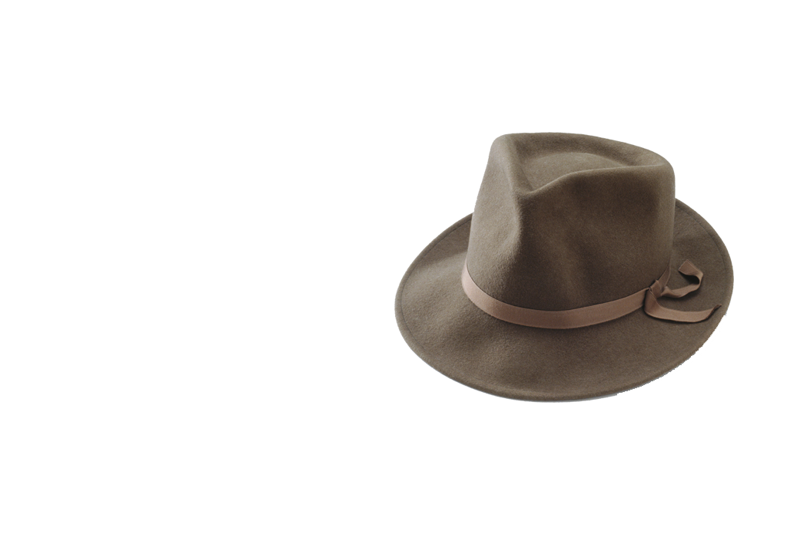
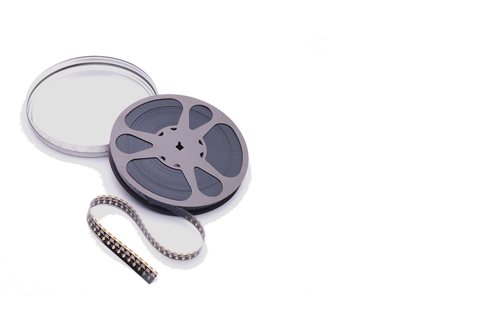

Mask
Etiam cursus erat eros, at gravida augue lacinia ut. Fusce odio lorem, fringilla sed aliquam vel, consequat feugiat lectus. Morbi sollicitudin lacus sed erat tempus, non finibus nunc aliquam. Donec a pulvinar metus, id scelerisque lectus. Aliquam erat volutpat. Nam id ligula sed urna dignissim congue. Fusce ut varius tellus. Integer vel rhoncus tellus.
Phasellus hendrerit posuere velit sed suscipit. Morbi eget blandit mauris. Quisque convallis quis velit sit amet placerat. Vestibulum ut leo bibendum, rutrum mi non, vulputate nibh. Praesent vitae viverra orci, at imperdiet nisl.
In a tincidunt sem. Fusce interdum metus ut bibendum congue. Suspendisse a erat leo. Vivamus efficitur ac neque eget luctus. Nunc aliquam eleifend eros a dignissim. Aliquam congue id justo sed finibus. Praesent finibus pretium malesuada. Mauris malesuada at lectus sit amet mattis. Quisque feugiat libero id erat gravida, sit amet euismod est gravida.

Hat
Sed fermentum massa in dui volutpat dignissim. Nunc at neque vel dui aliquam elementum. Morbi varius laoreet arcu, vel lobortis enim faucibus vitae. Morbi nec lorem tempor, luctus enim sed, imperdiet sem. Nam quis dui feugiat nibh tincidunt rhoncus. Integer tincidunt nec ipsum tristique imperdiet. Fusce ornare tellus purus, ac condimentum elit varius et. Nullam nec purus at mauris aliquam cursus. Sed vitae sapien ac nulla porttitor mattis euismod sed justo. Aenean vulputate sagittis libero, nec mattis sapien ultrices vel.
Phasellus hendrerit posuere velit sed suscipit. Morbi eget blandit mauris. Quisque convallis quis velit sit amet placerat. Vestibulum ut leo bibendum, rutrum mi non, vulputate nibh. Praesent vitae viverra orci, at imperdiet nisl.
In a tincidunt sem. Fusce interdum metus ut bibendum congue. Suspendisse a erat leo. Vivamus efficitur ac neque eget luctus. Nunc aliquam eleifend eros a dignissim. Aliquam congue id justo sed finibus. Praesent finibus pretium malesuada. Mauris malesuada at lectus sit amet mattis. Quisque feugiat libero id erat gravida, sit amet euismod est gravida.

Movie
Mauris consectetur magna sit amet metus placerat, consequat ullamcorper mi pellentesque. Pellentesque et velit dui. Nunc felis erat, rutrum in velit ac, luctus molestie nunc. Morbi sed consequa bero, sed eleifend dolor. Vestibulum pellentesque auctor ex sagittis consequat. Aenean sodales ultrices ante eget dignissim. Sed ornare aliquet massa non pulvinar.
Quisque a dui vitae felis aliquam ornare. Morbi nec faucibus erat, eu blandit libero. Pellentesque in justo odio. In hac habitasse platea dictumst. Phasellus auctor, quam eget rhoncus malesuada, aruris non odio vestibulum, varius sem eleifend, mollis lectus.
Integer vitae turpis enim. Nunc ac lobortis est, in elementum metus. Morbi a laoreet dolor. Nulla varius, tortor at cursus porttitor, erat dui volutpat turpis, vitae rhoncus justo risus tincidunt nulla. Integer rhoncus purus id dolor sollicitudin, a auctor leo aliquam. In scelerisque sem sed enim vulputate condimentum. Pellentesque auctor ullamcorper nibh nulla.